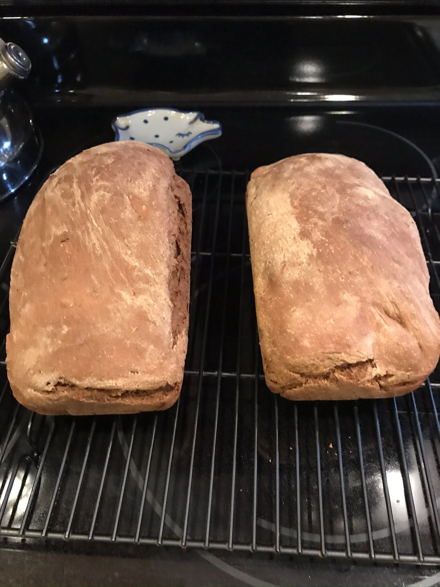

Russian Black Bread

Ingredients
2 tablespoons cider vinegar
2 tablespoons dark corn syrup
3 tablespoons unsweetened cocoa powder
1 teaspoon instant coffee granules
1 tablespoon caraway seed
¼ teaspoon fennel seed (Optional)
2 teaspoons active dry yeast
Steps
- Place ingredients into the bread machine in order suggested by the manufacturer.
- Use the whole wheat, regular crust setting.
- After the baking cycle ends, remove bread from pan, place on a cake rack, and allow to cool for 1 hour before slicing.